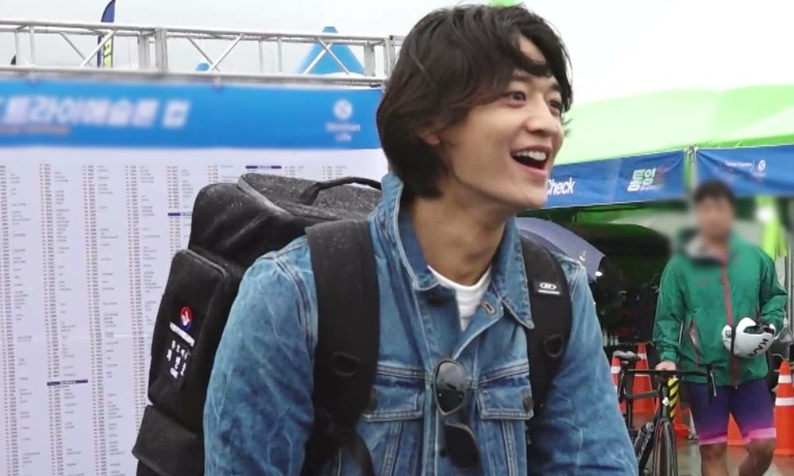
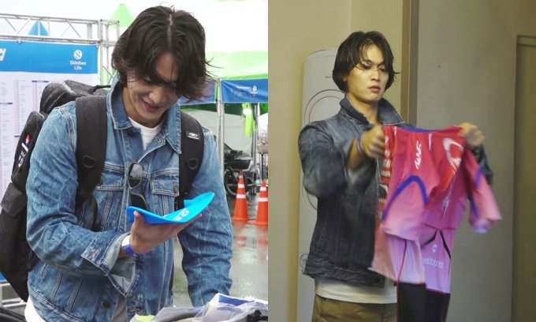
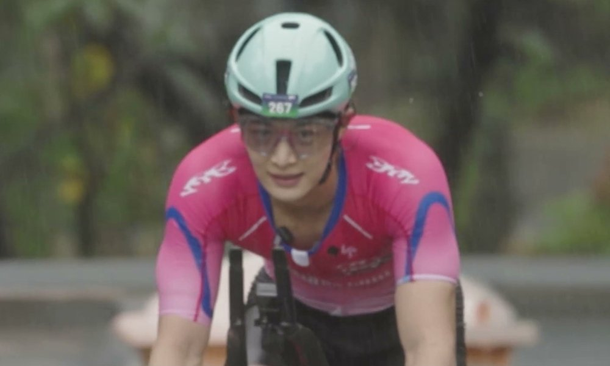
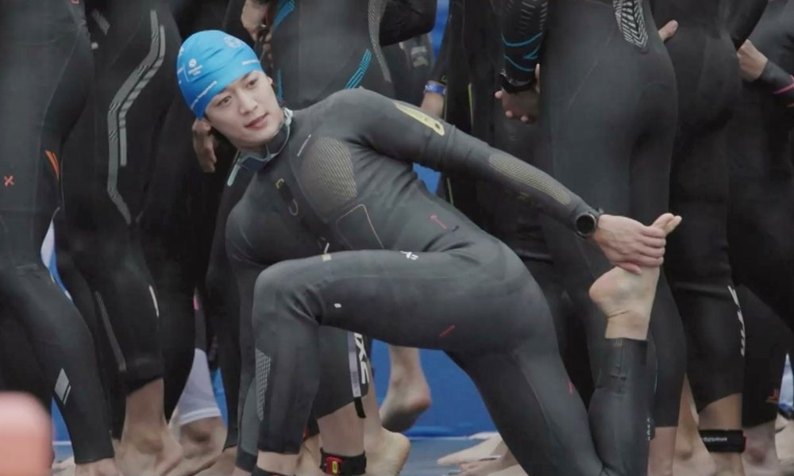
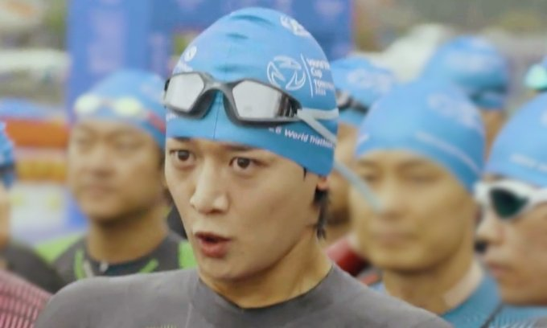

2시간 32분을 2시간 20분대로. 샤이니 민호가 '나 혼자 산다'에서 밝힌 이번 철인3종 목표였어요. 결과는 2시간 27분 14초. 11월 6일 방송된 672회의 통영 대회 장면을 목표와 결과, 두 숫자로 정리했어요.
📷 사진 1 자리
▲ '나 혼자 산다' 672회, 통영 철인3종 대회장을 찾은 민호 · 사진=MBC ‘나 혼자 산다’ 제공
목표는 '2시간 20분대'
민호가 나선 경기는 수영, 사이클, 달리기를 이어서 51.5km를 가는 철인3종이에요. 대회는 10월 25일 경남 통영에서 열렸어요. 출전 목표는 분명했어요. 지금까지의 개인 기록 2시간 32분을 깨는 것이었죠.
종목별 목표도 미리 밝혔어요. 수영 30분 이내, 사이클 1시간 12분 이내, 달리기 40분. 세 종목 목표만 더하면 2시간 22분이에요. 그래서 전체 목표를 '2시간 20분대'로 잡았어요.
대회 전날, 자전거부터 검사받는 이유
경기 전날 통영은 장대비가 내렸어요. 민호는 빗속에 대회장을 찾아 선수 등록을 마치고 자전거와 헬멧 검사를 받았어요.
📷 사진 2 자리
▲ '나 혼자 산다' 672회, 대회 장비를 준비하는 민호 · 사진=MBC ‘나 혼자 산다’ 제공
코드 쿤스트가 검차에서 무엇 때문에 걸리느냐고 묻자, 민호가 직접 설명했어요. 핸들이 규격보다 튀어나왔거나, 뒷바퀴에 모터를 다는 식으로 개조한 경우가 있다는 거예요. 민호는 "기록이 빨라지니까" 개조 여부를 본다고 말했어요. 철인3종이 기록을 얼마나 엄격하게 재는 경기인지 보여 주는 장면이에요.
📷 사진 3 자리
▲ '나 혼자 산다' 672회, 빗속 사이클 구간의 민호 · 사진=MBC 제공
비 오는 통영, 2시간 27분 14초
대회 당일에도 날씨는 나빴어요. 민호는 수영, 사이클, 달리기를 차례로 마쳤어요. 이날 민호가 내건 다짐은 "NO 핑계! NO 징징!"이었어요.
📷 사진 4 자리
▲ '나 혼자 산다' 672회, 웨트슈트 차림으로 몸을 푸는 민호 · 사진=MBC ‘나 혼자 산다’ 제공
결승선 기록은 2시간 27분 14초. 종전 기록보다 5분 가까이 줄였고, 목표로 잡은 2시간 20분대 안에 들어왔어요. 방송 자막에 따르면 35~39세 동호인 부문 3위였어요.
📷 사진 5 자리
▲ '나 혼자 산다' 672회, 수영 출발을 기다리는 민호 · 사진=MBC ‘나 혼자 산다’ 제공
대회와 방송 사이, 마라톤 일주일
통영 대회 일주일 뒤인 11월 1일, 민호는 '2026 JTBC 서울마라톤'에서 처음 풀코스를 뛰어 3시간 00분 18초에 들어왔어요. 그런데 레이스 중 동반 주자가 민호의 몸을 미는 장면이 알려지며 공정성 문제가 제기됐어요.
민호는 사과하고 대회 주관사에 기록 반납 의사를 전했고, 주관사도 이를 받아들였어요. 반납이 규정 위반 확정을 뜻하는 건 아니라는 보도도 있었어요. 순서로 보면 철인3종 대회가 먼저였고, 방송은 반납 뒤에 나간 셈이에요.
정리하면서 가장 눈에 띈 건 목표를 종목별 분 단위로 먼저 밝혔다는 점이었어요. 숫자를 미리 공개했으니 기록을 줄였는지는 결과 하나로 바로 확인돼요. 공정하게 기록을 재는 검차 설명이 마라톤 기록 반납과 같은 주에 방송됐다는 점도 겹쳐 보였어요.
민호의 철인3종 기록은 2시간 27분 14초로, 종전 2시간 32분을 넘어 목표한 20분대에 들어왔어요. 해당 장면은 MBC '나 혼자 산다' 672회(11월 6일 방송)에서 다시 볼 수 있어요.




